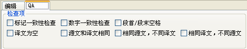
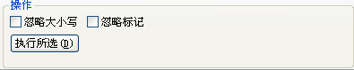
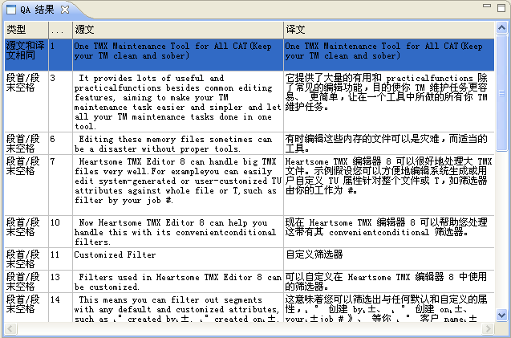

Heartsome TMX Editor 8 为您提供了针对 TMX 文件的 QA 功能，也能根据生成的 QA 报告，对错误内容做快速处理。以下详细介绍：
在 QA 视图的“检查项”模块，提供了6种 QA 检查项供选择：

标记一致性：源文和译文的内部标记个数是否相同，内容是否相同。
数字一致性：源文和译文中的数字是否相同。
段首/段末空格：源文和译文在段首/段末的空格是否一致。
译文为空：是否有未翻译的文本段。
源文和译文相同：源文和译文相同的文本段。
相同源文，不同译文：源文相同，却有不同译文的文本段。
相同译文，不同源文：相同的译文却来自不同的源文的文本段。
1、在 QA 视图的“操作”模块中，选择是否“忽略大小写”和是否“忽略标记”，来确定是否以更加精确的方式来进行内容对比。

2、点击【执行所选】按钮，软件自动打开 QA 结果视图，生成相应的 QA 报告。

您只需要双击 QA 结果中的错误信息，便会自动定位到编辑器中对应的行，进而快速进行错误的修复。